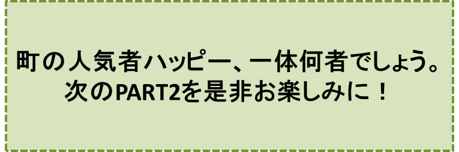

カラスの大王物語-PART1-
『ハッピー』の巻
笠原正雄
ジローは高校3年生。朝食を済ませると、朝8時から12時までたっぷり4時間、二階の六畳の間で勉強します。
大きな網戸の窓の近くに勉強机があり、暑い夏の日でも、庭の緑、緑、緑、緑いっぱいの木々が送ってくれるひんやりした風が、頬に心地よく、当たってくれます。クーラーをつけなくても、とても楽しく勉強できます。
ジローは数学の中村先生伝授の“復習流”という勉強法で頑張っています。夏休みまでに学んだ教科書の復習、復習、復習をすること、これが復習流の極意です。復習ごとに新しい発見があります。午前中の勉強時間が、とっても楽しい時間となります。復習流は不思議の術です。
“あ、そうだったのか!”
と、今まで気づかなかったことが幾つも見つかって、
“なるほど、なるほど”
と、もう楽しくて、仕方がありません。基礎力がつくと応用力も自然につく、復習流は凄い、というジローの確信です。
実力がつき、応用力もついてくることが、日々十分に自覚できて、ワクワク気分一杯です。
楽しい勉強ですから、あっという間の4時間。早くもお昼ご飯の時間になりました。ジローは教科書をバターンと閉じ、教科書さんに
“また、明日ね！”
との言葉をかけて、お昼ご飯のテーブルに向って、元気いっぱい、階段をドンドンドンと駆け降ります。
お母さん手作りのパスタ、それに冷たい牛乳たっぷりのお昼ご飯です。
「ご馳走さまでした！」
感謝に満ちた言葉を、食堂に残して、いざ縁側へ。いよいよ“遊び”の時間の始まりです。
このリラックスしたジローの姿を、庭の大きなクスノキの下で、朝から昼寝をして待っていたシェパ－ド犬のゴンが見逃すはずはありません。
クスノキの下から猛ダッシュ。縁側に飛び上がるとジローのズボンをくわえ、
“早く！ 早く！”
と散歩の催促です。
「おーい、ゴン！ 待ってくれよ。僕は今、お腹いっぱいなんだから……」
とのジローの声にも、ゴンは一切お構いありません。庭に飛び降り、
“一緒についてきてね”
とほんの少しジローを振り返っただけで、ピーンとのばした尻尾を、指揮棒のように振って、
“急げ”“急げ”
と散歩の先導役です。
ゴンとジローの向った所は、近くの「マイ広場」。
「マイ広場」は、昔は「舞いの森公園」と呼ばれていたのでしたが、この広場で遊ぶ沢山の子供達が、40年ぐらい前から、親しみを込めて「マイ広場」と呼び始めたのです。
20年くらい前では、マイ広場は子供達で大入り満員の状態でした。
沢山の小さな子供達がドッジボールをしたり、お相撲をとったり、カクレンボをしたり、鬼ごっこをしましたし、少し大きいお兄さん、お姉さん達はサッカーや野球、ソフトボールを楽しんでいました。
マイ広場は、果てしなく広い原っぱが延々と広がっており、ずっと向うには森があって、森は、遥か向うにかすんで見える山すそまで、続いています。
子供達は、マイ広場で心ゆくまで遊ぶことができます。
遠くに見える山からは、小さな魚達が元気に泳いでいる「舞いの川」がゆっくり流れ下ってきています。沢山の子供達が見張りのおじさん、おばさん達に守られて、泳ぎをしたり、キャンプを楽しんだりしていました。
……しかしそれは20年ぐらい迄のことでした。こんな風景は、今は全く見られません。
ある年から、“ハーメルンの笛吹き男”ならぬ“マイ広場の笛吹き男”がやってきて
“お勉強ー！”“お勉強ー！”“お勉強だよー！”
と叫びながら、ピーヒョロ。ピーヒョロと笛を吹き
♪♪お勉強が、いちばあーん、楽しいことだよ♪♪
などと歌って、広場を毎日、踊り歩くようになりました。勉強することの効能を長々と書き綴ったビラを広場にまき散らしたりもしました。ビラには、にこにこ笑いながら勉強している子供達の様子などが、マンガで描かれていました。
また、ある日から、両手にキラキラ光る本物そっくりのナイフやバットを持った男たちがやってきて、お腹に抱えた大きな太鼓をナイフやバットでポンポンたたき、
“恐いぞぉ”“恐いぞぉ”
などと叫びながら、広場を我がもの顔に走りまわるようにもなりました。
子供達は一人減り、二人減り、そして遂に20年以上たった今、この広場に遊びに来るのはジローとゴンだけ、になったのです。笛吹き男も太鼓男もばったり来なくなって、この広ーい「マイ広場」を二人、つまりジローとゴンが、独占するようになったのです。
二人がいつもやることは、フリスビー遊びです。
ジローが思いっきり、フリスビーを青空に向って放り投げると、フリスビーは気流に乗って、どんどん飛んでいきます。まるで翼が生えた鳥のように。
ゴンはジローが投げる構えに入っただけで
“ボク、待てないよ！”
とばかりに早目のスタート。
ギャロップ！ ギャロップ！ ギャロップ！ アフリカの草原を走るチータそっくりにギャロップ、ギャロップ。
全速力で走ります。そして空中に3メートルも飛び上がったかと思われるほど、高くジャンプして、見事にフリスビーをキャッチします！
フリスビーをくわえたゴンは、素早くユーターン。まっしぐらにジローの元に戻ります。
10回もこんなことを繰り返すと、さすがのゴンも大きな舌を出して
ハァ、ハァ、ハァ、ハァ
と、大きな息づかいです。
しばらく休憩した後、「舞いの川」まで、歩いて僅か3分。ジローとゴンの二人は、ひと泳ぎして夏休みを満喫します。
二人はたっぷり3時間ほど、フリスビー遊びそして泳ぎの繰り返しです。
こんなことを毎日楽しめるのも夏休みぐらいですから、夏休みを待ちに待っていたのです。
フリスビー遊びをしている場所からほんの数メートルの所に、大きく枝をひろげ、見上げるほどに背が高く、驚くほど幹が太いムクノキが地面にしっかり根をはって、生えています。
このムクノキの下の方の枝に、これまでジローもゴンも全く気付きませんでしたけれど、いつも小さなカラスが羽根を休めて止まっており、この夏休み、ジローとゴンのフリスビー遊びを楽しく見物していました。
このカラス、町の人達から“ハッピー”と呼ばれている、人気者の可愛いカラスでした。
ハッピーはこの日も、ジローとゴンのフリスビー遊びを楽しく見物していましたが、今日は特別に上機嫌です。
と申しますのも、朝早くから、ハッピーはビニール袋に包まれた生ゴミを物色していたのでしたが、そのうちの一つから、今まで口にしたこともない特別高価なチーズの食べ残し、そしておまけに、デザートとしてピーナツバターを沢山に見付けたからでした。
“えっ！ 生ゴミあさりをするカラスがどうして町の人気者？”
とおっしゃるでしょう。
大丈夫！ 人気者になる理由がちゃんとあるのです。
ハッピーは、生ゴミがビニール袋にどんなにうまく、紐で縛られていても、紐をほどいて中身をとり出すことができ、しかも元通りにビニール袋を、紐で、しっかり縛り直すことができるのです。
それだけではありません。お行儀の悪いカラスが食べ散らかしていった跡を、あっという間に元通りに片付けて、すまし顔で飛んでいきます。
ある放送会社が、このハッピーの行動の行動の一部始終をビデオカメラに収録して、朝の番組で放映しましたので、ハッピーは、一躍、町の人気者になったというわけです。
ハッピーは、ジローとゴンのフリスビー遊びを上機嫌で眺めていたのでしたが、今日、あの飛びっきり上等のチーズとピーナツバターをお腹いっぱい食べたためでしょう。つい、うとうとと眠りにつきました。
その瞬間でした。ジローの投げたフリスビーが、手元狂って反対方向に飛び、バァーンと音を立ててハッピーを直撃しました。
“ギャー”
ハッピーは驚きの声をあげて、数メートルも飛び上がり、羽をバタバタさせながら元の枝に戻りました。
このあまりの大慌てぶりに、ジローはお腹を抱えて地面に座り込んで大笑いしましたし、ゴンも面白くて仕方がないというように、ジローのまわりをぴょんぴょん飛び跳ねました。誰でも笑ってしまいそうな風景でした。
……しかし、ムクノキの枝に止まって、この様子をじっと眺めているハッピーの目が、鉛のように鈍く、そして氷のように冷く光り、恨みに満ちていたことにジローもゴンも全く気づきませんでした。
ジローとゴンを眺める鈍く冷たく光るハッピーの眼差し、町の人気者ハッピーとは程遠い姿だったのです。
夕方、ジローとゴンとが家路に着くと、ハッピーもまた空高く舞い上がり、遥か上空から後をつけていました。そしてジローの家をしっかり見とどけると、さらに高く舞い上がり、夕暮れの空に小さく小さく、消えていきました。
♪♪♪♪コーヒーブレイク♪♪♪♪
